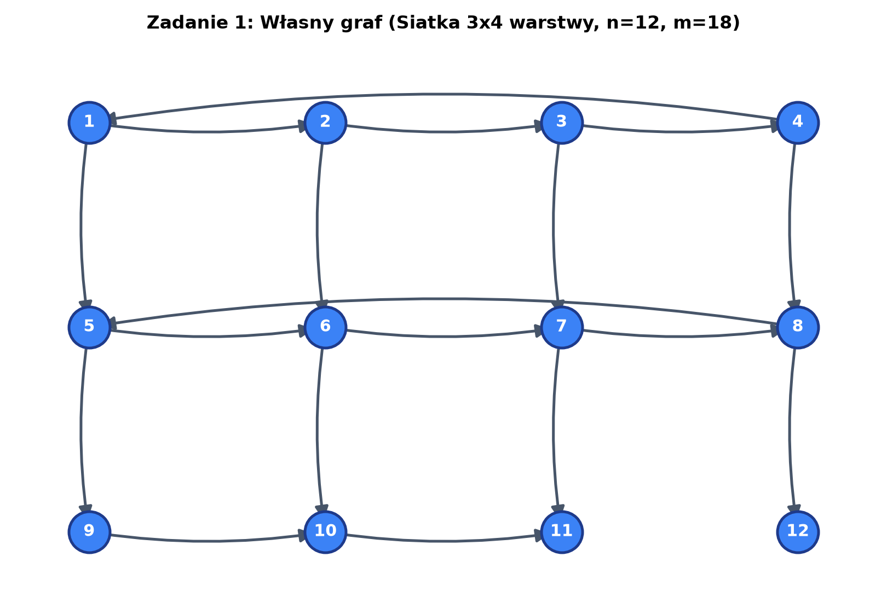
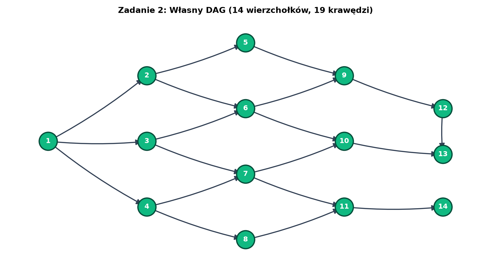
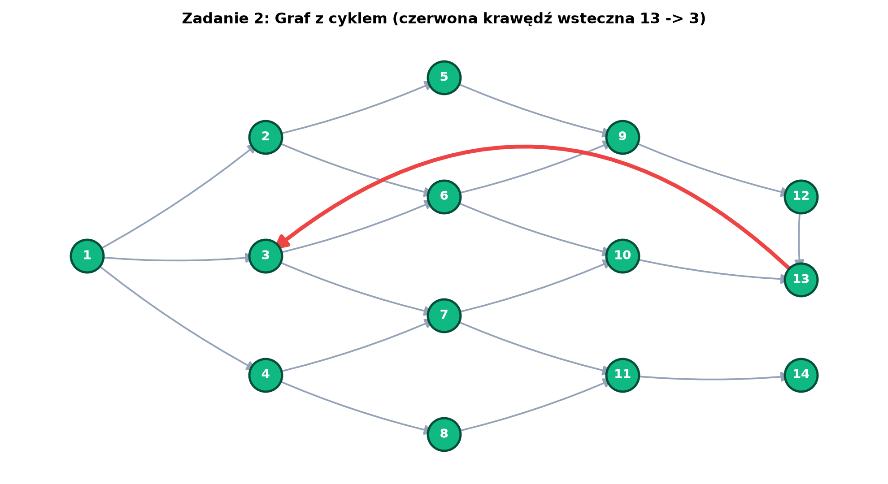
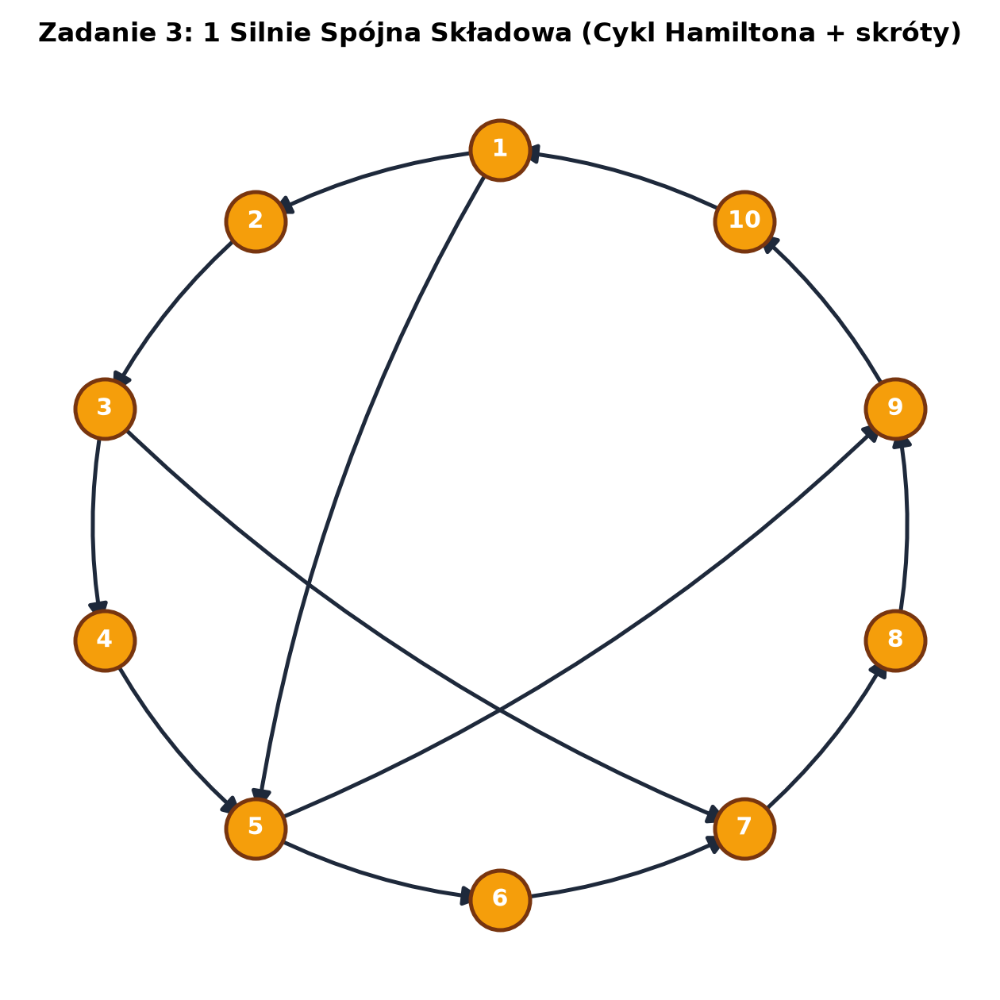
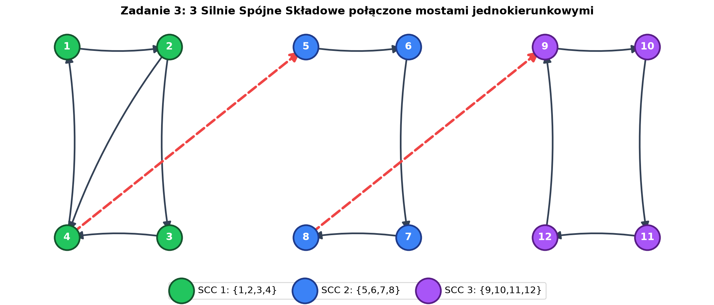
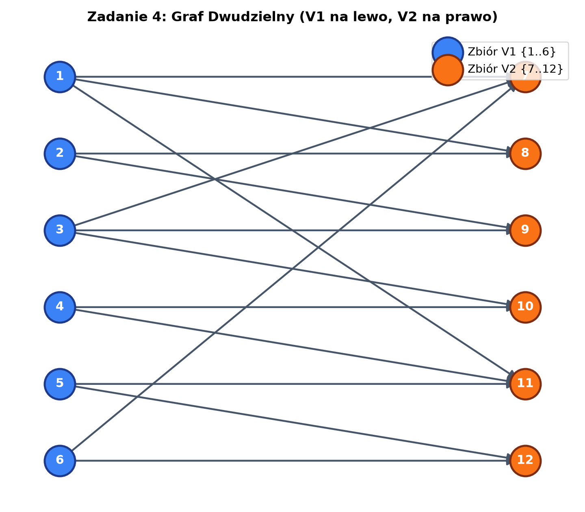
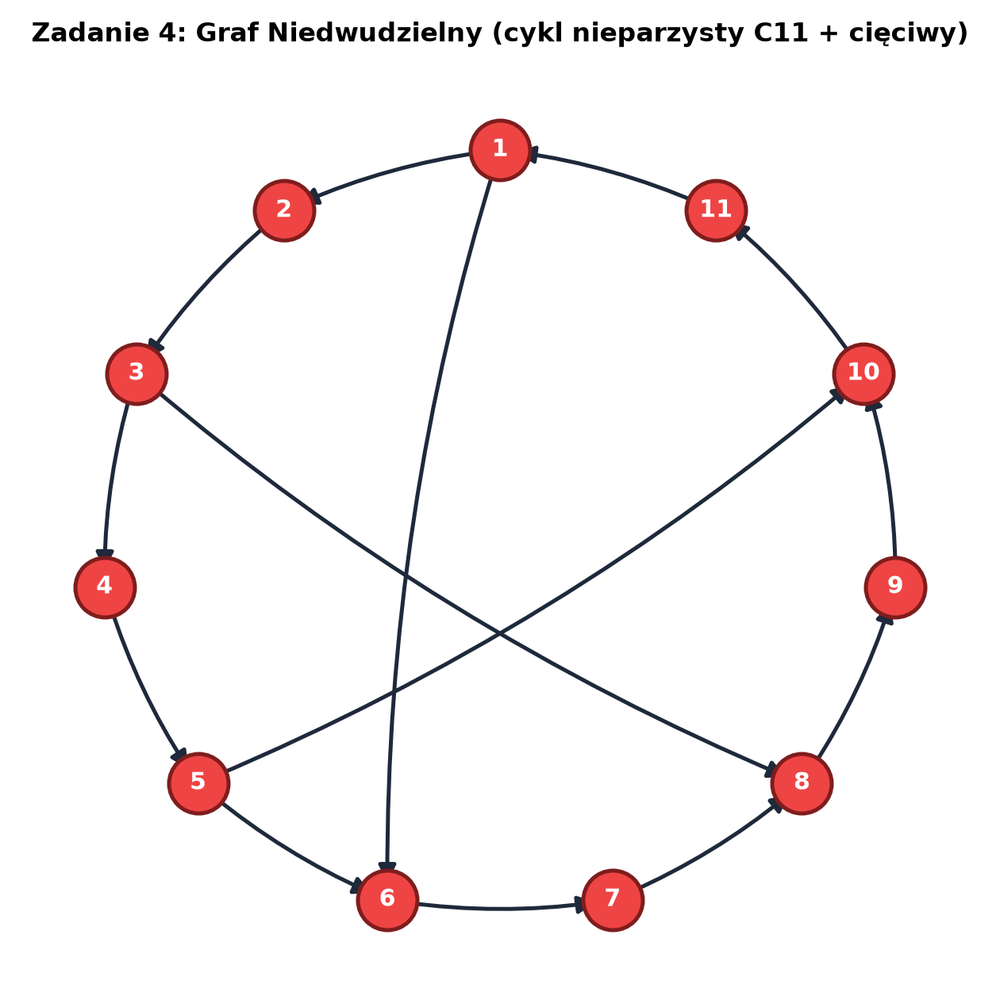

Wszystkie wykresy wygenerowane z poprawnymi współrzędnymi geometrycznymi (siatka, warstwy, cykle).

Graf złożony z 3 poziomych warstw po 4 wierzchołki. Poziomy tworzą cykle, a pionowe krawędzie łączą odpowiadające wierzchołki.


DAG: Sieć 5 warstw skierowana z lewej do prawej. Źródło = 1, ujścia = 13 i 14.
Cykl: Dokładnie ten sam graf, do którego dodano jedną czerwoną krawędź powrotną 13 → 3.


Wariant 1: Jeden duży cykl na 10 wierzchołkach ze skrótami w środku.
Wariant 2: Trzy niezależne 4-wierzchołkowe cykle (zielony, niebieski, fioletowy) połączone jednokierunkowymi mostami 4 → 5 i 8 → 9.


Dwudzielny: Wierzchołki ułożone w 2 kolumny (V1 na niebiesko, V2 na pomarańczowo). Każda krawędź łączy V1 z V2.
Niedwudzielny: Cykl o nieparzystej długości 11 wierzchołków ($C_{11}$) z cięciwami.